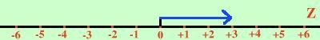

(+
3
) · (+
2
) =
E' il caso che deve corrispondere al prodotto fra naturali
considero il primo numero su Z

Per moltiplicare per +2 ripeto due volte il numero dalla stessa parte dove si trova
(+
3
) · (+
2
) = +6